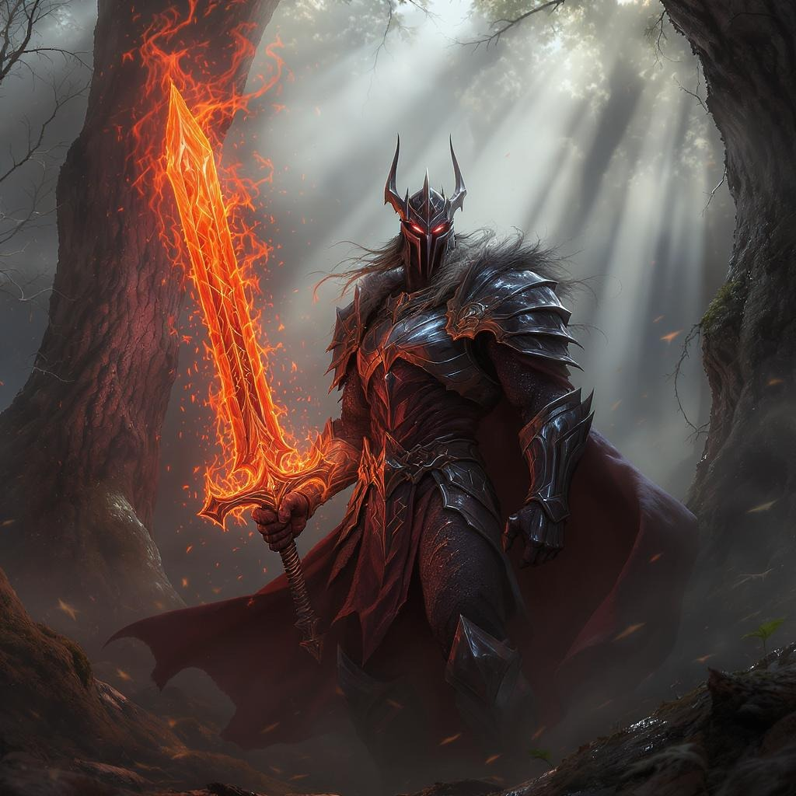
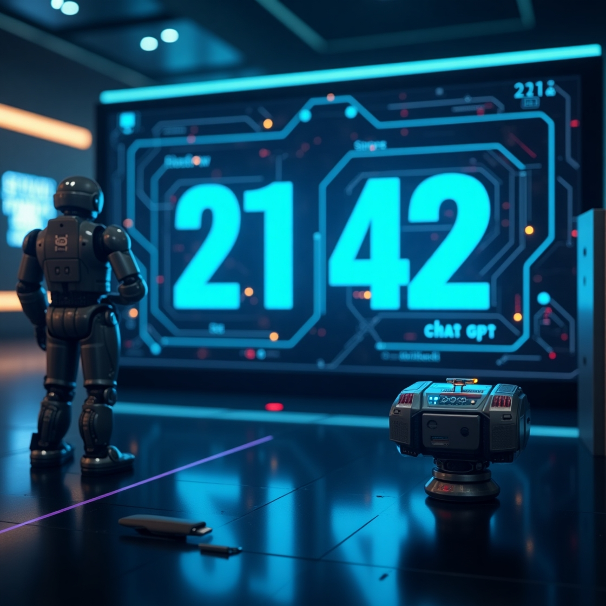
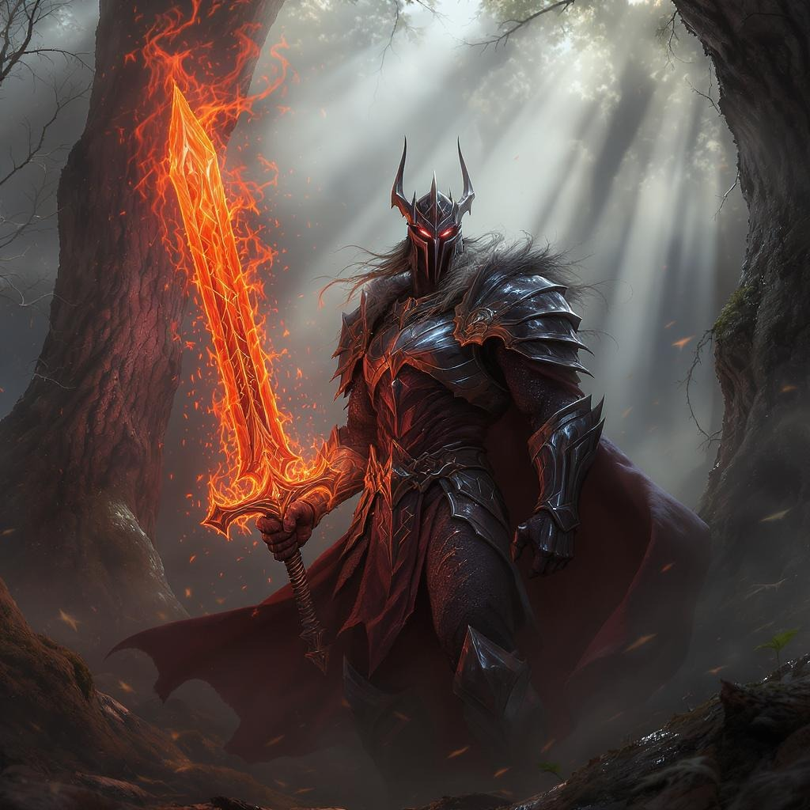
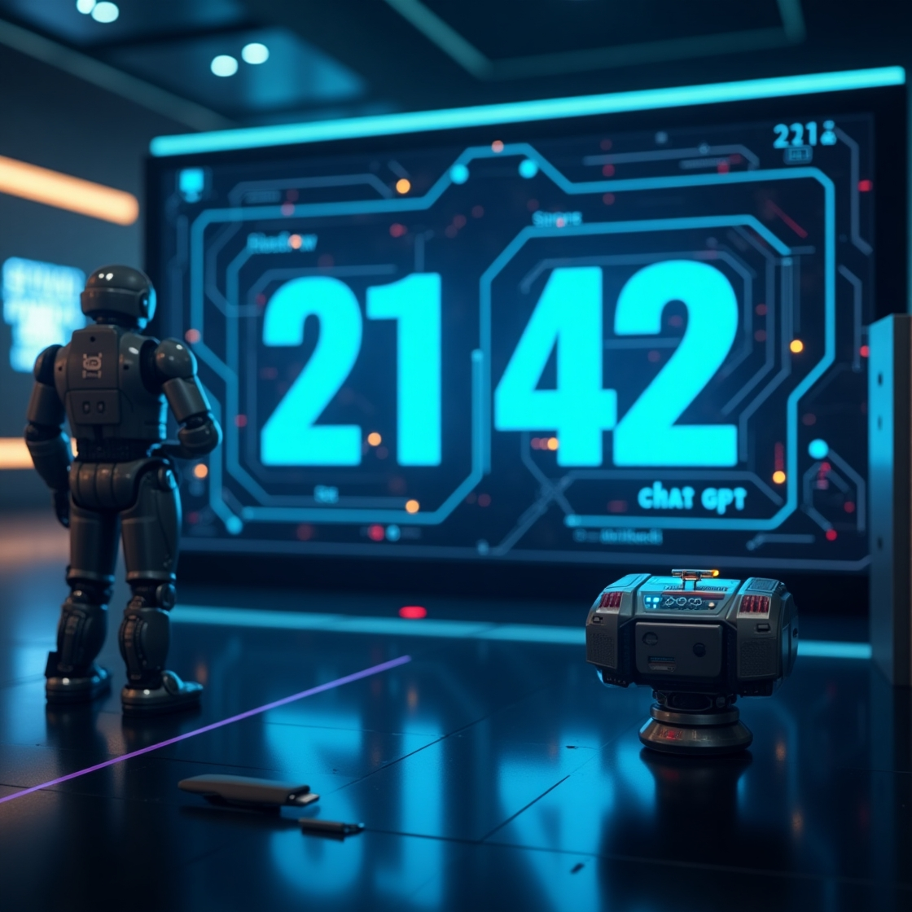

eIAM - Explorarea Inteligenței Artificiale în Multimedia
Acest portofoliu reprezintă o colecție diversificată de proiecte multimedia realizate cu ajutorul inteligenței artificiale, ilustrând modul în care tehnologia transformă și extinde posibilitățile creației artistice. Prin intermediul instrumentelor AI, am explorat noi modalități de a genera muzică originală, videoclipuri captivante și creații literare unice, care combină inovația tehnologică cu expresivitatea umană.
Fiecare proiect din această colecție este un exemplu al potențialului creativ al inteligenței artificiale de a sprijini și inspira artiștii și creatorii, deschizând noi perspective în domeniul multimedia. Acest demers pune în lumină modul în care AI poate fi folosită nu doar ca o unealtă tehnologică, ci și ca un partener colaborativ în procesul artistic, contribuind la dezvoltarea unor forme noi și captivante de expresie.
Prin această explorare, îmi propun să evidențiez impactul pe care inteligența artificială îl are în redefinirea granițelor artei digitale și să ofer o perspectivă asupra viitorului creativității multimedia, unde tehnologia și imaginația umană se întâlnesc pentru a da naștere unor experiențe inovatoare și memorabile.